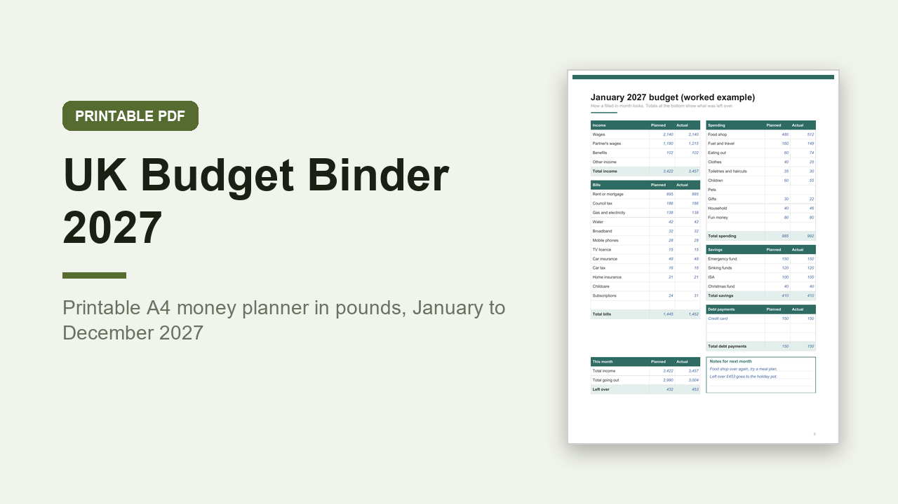

UK Budget Binder 2027, Printable A4 Budget Planner in GBP
GBP 6.00 · instant digital download

A budget binder for 2027 made for the UK: pounds, A4 paper, UK bills and UK spelling.
For anyone who budgets better with a pen than a spreadsheet.
What you get: 1 printable A4 PDF, 47 pages, portrait, not editable, for printing at home.
Inside: how to use, 2027 year at a glance with UK bank holidays for England and Wales, Scotland and Northern Ireland, money goals, income sources, a UK bill tracker (council tax on 10 or 12 instalments, energy, water, TV licence, car tax, MOT, insurance) with a paid tick for each month, annual and irregular costs, a worked example January budget, a month by month overview, then for each month January to December 2027 a budget page (income, bills, spending, savings and debt payments, planned against actual, left over) and a spending log.
Then 8 sinking fund pots to colour in, 4 savings goal trackers, a debt payoff plan and debt balances by month, a Christmas 2027 savings plan with a gift budget, a no spend days calendar for the year, 12 cash envelope trackers, a subscriptions audit, an end of year money review and notes.
An organiser only, not financial advice.
Digital download, nothing is posted..
What happens after you buy
Payment and delivery are handled by Gumroad. You get the download straight after paying, and a copy of the link by email. Nothing is posted to you.
Tags: budget binder, budget planner, uk budget, printable planner, 2027 budget, money planner, a4 printable, sinking funds, bill tracker, savings tracker